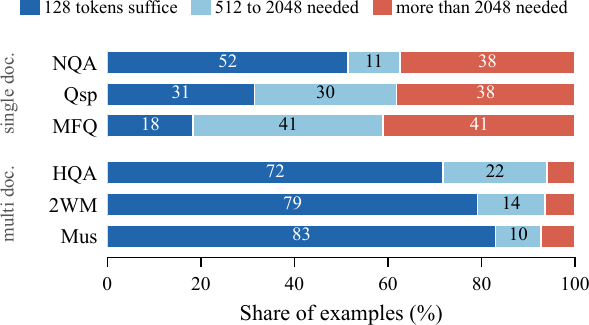
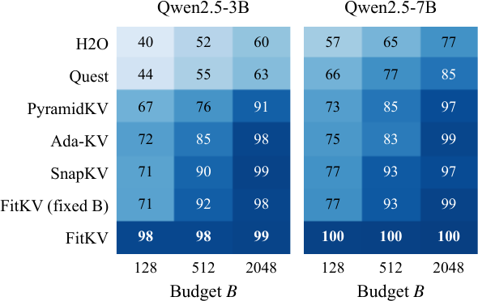

FitKV:
Fitting the KV cache budget to each input
TL;DR
The key value (KV) cache of an LLM grows with the input and dominates memory in long context inference. Eviction methods keep only the most attended tokens, but they give every input the same budget, even though some questions can be answered from a sliver of their context and others need almost all of it.
FitKV reads how strongly the final prompt queries agree on where to look, and uses that agreement to give each input its own budget between a minimum you choose and its full length. It needs no training, no threshold and no extra model pass.
On LongBench, with every comparison on identical examples, FitKV beats fixed budget methods at small budgets on all three models, and with a minimum of 128 tokens it retains at least 96% of full cache accuracy in every task category, against 52 to 93% for fixed budgets.
Retain
How much accuracy survives a tiny cache?
Qwen2.5 3B and 7B, six QA tasks, minimum of 128 tokens per layer
98 to 100%of full cache accuracy, against 72 to 77% for the best fixed budget
Attribute
Is the gain from the budget or from token selection?
Same selection with a fixed budget, ten of twelve settings
+4.1 to +7.1points at 128 tokens from adapting the budget alone
LLMs increasingly read long inputs: reports, codebases, dialogue histories, retrieved passages. Every layer stores a key and a value for every input token, and each new token reads all of them. For Qwen2.5 7B, the cache of a single 128K token input takes 7 GiB in 16 bit precision, half the size of the model weights, so the cache rather than computation limits how many requests can be served.
Eviction keeps part of the cache after the prompt is processed. H2O accumulates attention over all positions[1], SnapKV uses a window of queries at the end of the prompt[2], Quest bounds attention per page[3], and PyramidKV and Ada KV redistribute the budget across layers and heads[4, 5]. In all of them, the total budget is the same for every input.
Inputs need very different budgets

Across the six question answering tasks, 128 tokens already reproduce the full cache score for 60% of examples, while for 20% even 2,048 tokens are not enough. Single document tasks are the hardest to budget: the answer to a question about a long article may lie anywhere in it. Any fixed budget is too large for most inputs and too small for a sizeable minority. The difficulty is to tell them apart before generating, without labels and without an extra pass.
Method

Step 1
Measure how much the final queries disagree
After the prompt pass, FitKV looks at the last 64 prompt queries, which usually contain the question, in the last third of the layers. Attention is pooled into blocks of 16 tokens, and for each block FitKV takes the mean and the standard deviation of attention across the queries. Their ratio measures disagreement: low when all queries look at the same evidence, high when attention is fragmented.
Step 2
Turn disagreement into a per input budget
The averaged disagreement becomes a scalar λ between zero and one, and the budget of the input is placed between the minimum B and the full length n: Bx = n − λ(n − B). When the queries agree, the evidence is shared and the full cache behaviour is worth keeping, so the budget stays near n; when they disagree, the cache shrinks towards the minimum.
Step 3
Select blocks with the same statistics
Every layer then keeps its highest scoring blocks, plus the observation window and the last two blocks. A block's score combines its mean attention, its spread across queries and a value term that measures how far the block's values lie from the window's attention output.
Baselines and setup
FitKV is compared with H2O[1], SnapKV[2], Quest[3], PyramidKV[4] and Ada KV[5], and with FitKV (fixed B), which uses FitKV's block selection with a fixed budget. All methods share one implementation, so differences come only from selection and budget. Evaluation uses LongBench[6] on Qwen2.5 3B, Qwen2.5 7B and Llama 3.1 8B. LongBench has two versions whose example sets differ, so every comparison is made on identical examples, and differences are tested with paired bootstrap intervals.
Experiments
Experiment 1
How close to the full cache does each method stay?

| Method | 3B, 128 | 3B, 512 | 3B, 2048 | 7B, 128 | 7B, 512 | 7B, 2048 |
|---|---|---|---|---|---|---|
| Full cache | 26.4 | 26.4 | 26.4 | 18.6 | 18.6 | 18.6 |
| H2O | 10.6 | 13.8 | 15.9 | 10.6 | 12.2 | 14.3 |
| Quest | 11.6 | 14.5 | 16.6 | 12.3 | 14.4 | 15.9 |
| SnapKV | 18.8 | 23.6 | 26.2 | 14.3 | 17.3 | 18.1 |
| PyramidKV | 17.6 | 20.0 | 24.0 | 13.5 | 15.8 | 18.0 |
| Ada KV | 19.1 | 22.3 | 26.0 | 13.9 | 15.5 | 18.4 |
| FitKV (fixed B) | 18.8 | 24.2 | 25.9 | 14.4 | 17.3 | 18.5 |
| FitKV | 25.9 | 25.9 | 26.1 | 18.6 | 18.6 | 18.7 |
Table 1. Mean score over the six QA tasks on Qwen2.5 3B and 7B, for minimum budgets of 128, 512 and 2048 tokens per layer. All rows of a column use identical examples.
Fixed budget methods lose accuracy steadily as the budget shrinks; at 128 tokens the best of them trails the full cache by 7.3 points on Qwen2.5 3B. FitKV stays within 0.6 points of the full cache at every budget, an improvement of 6.8 points on the 3B model and 4.3 on the 7B model over the best fixed budget method at 128 tokens.
Experiment 2
Where does the gain come from?
| Model | Budget | vs best baseline | vs FitKV (fixed B) |
|---|---|---|---|
| Qwen2.5 3B | 128 | +6.8 | +7.1 |
| 256 | +6.2 | +5.6 | |
| 512 | +2.2 | +1.7 | |
| 1024 | +1.7 | +1.4 | |
| 2048 | −0.1 | +0.2 | |
| Qwen2.5 7B | 128 | +4.3 | +4.1 |
| 256 | +9.2 | +9.4 | |
| 512 | +1.3 | +1.3 | |
| 1024 | +1.3 | +1.1 | |
| 2048 | +0.4 | +0.2 | |
| Llama 3.1 8B | 256 | +4.0 | +3.8 |
| 1024 | +1.2 | +0.9 |
Table 2. Difference in mean score (points) between FitKV and the best baseline, and between FitKV and the same selection with a fixed budget. The 2048 token differences fall inside their bootstrap intervals; all others are significant.
FitKV is significantly better than the best baseline in ten of twelve settings; the two exceptions are at 2,048 tokens, where fixed budgets already approach the full cache. With a fixed budget, FitKV's selection is within 0.6 points of SnapKV, so the selection terms add little on their own. Adding the input adaptive budget improves on it in ten of twelve settings. The gain comes from deciding how much to keep, not which tokens to keep.
Experiment 3
Which kinds of task benefit?
| Method | 3B single doc | 3B multi doc | 3B few shot | 7B single doc | 7B multi doc | 7B few shot |
|---|---|---|---|---|---|---|
| SnapKV | 59.6 | 82.1 | 75.9 | 66.0 | 87.7 | 63.2 |
| PyramidKV | 52.6 | 80.0 | 73.7 | 52.2 | 93.1 | 61.5 |
| Ada KV | 60.6 | 83.9 | 75.8 | 57.9 | 91.7 | 62.6 |
| FitKV | 96.8 | 99.5 | 100.0 | 97.9 | 101.5 | 98.9 |
Table 3. Accuracy retained at 128 tokens, in percent of the full cache score, by task category.
Single document QA suffers most under fixed budgets, keeping only 52 to 67% of full cache accuracy; FitKV keeps 96.8 to 101.5% in every category. The largest single gains appear on TREC, a few shot task whose labelled examples are spread across the prompt: at 256 tokens the best baseline reaches 46.7 to 50.7, and FitKV 66.0 to 71.5. FitKV is also much less sensitive to the minimum: its output at 128 tokens is identical to its output at 2,048 for over 90% of examples.
Because FitKV keeps more than the minimum for some inputs, methods are compared at the same minimum budget rather than the same average memory. The runs did not record how many tokens each input kept, so these results make no claim about memory saved or latency.
Citation
Please cite this post as
Paul Trust. “FitKV: Fitting the KV cache budget to each input.” October 2026. https://paultrust26.github.io/paultrust/blog/fitkv.html
or in BibTeX
@misc{trust2026fitkvblog,
title = {{FitKV: Fitting the KV cache budget to each input}},
author = {Trust, Paul},
year = {2026},
month = oct,
howpublished = {\url{https://paultrust26.github.io/paultrust/blog/fitkv.html}},
note = {Blog post}
}References
- H2O: Heavy-Hitter Oracle for Efficient Generative Inference of Large Language Models[PDF]Zhang, Z., Sheng, Y., Zhou, T., Chen, T., Zheng, L., Cai, R., Song, Z., Tian, Y., Ré, C., Barrett, C., Wang, Z. and Chen, B., 2023. Advances in Neural Information Processing Systems (NeurIPS).
- SnapKV: LLM Knows What You Are Looking for Before Generation[PDF]Li, Y., Huang, Y., Yang, B., Venkitesh, B., Locatelli, A., Ye, H., Cai, T., Lewis, P. and Chen, D., 2024. Advances in Neural Information Processing Systems (NeurIPS).
- Quest: Query-Aware Sparsity for Efficient Long-Context LLM Inference[PDF]Tang, J., Zhao, Y., Zhu, K., Xiao, G., Kasikci, B. and Han, S., 2024. International Conference on Machine Learning (ICML).
- PyramidKV: Dynamic KV Cache Compression based on Pyramidal Information Funneling[PDF]Cai, Z., Zhang, Y., Gao, B., Liu, Y., Li, Y., Liu, T., Lu, K., Xiong, W., Dong, Y., Hu, J. and Xiao, W., 2024. arXiv preprint arXiv:2406.02069.
- Ada-KV: Optimizing KV Cache Eviction by Adaptive Budget Allocation for Efficient LLM Inference[PDF]Feng, Y., Lv, J., Cao, Y., Xie, X. and Zhou, S.K., 2025. Advances in Neural Information Processing Systems (NeurIPS).
- LongBench: A Bilingual, Multitask Benchmark for Long Context Understanding[PDF]Bai, Y., Lv, X., Zhang, J., Lyu, H., Tang, J., Huang, Z., Du, Z., Liu, X., Zeng, A., Hou, L., Dong, Y., Tang, J. and Li, J., 2024. Annual Meeting of the Association for Computational Linguistics (ACL).